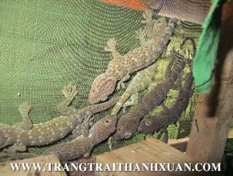
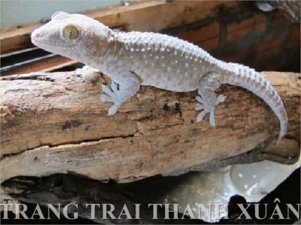

Tắc kè giống & thương phẩm
Tắc kè giống to, khỏe, không ốm đau dị dạng, đủ mọi lứa tuổi và màu sắc. Thu mua tắc kè thương phẩm quanh năm, giá ổn định.

Giá tính theo tháng tuổi
Giống được chọn lọc kỹ, ghép đúng tỷ lệ giúp tỷ lệ đậu trứng cao nhất.
Giá bán giống
Giá thu mua
Màu sắc giống: xanh xám, xanh đen, xanh trắng, nâu đen, đen trắng, nâu mốc, đen mốc (tắc kè miền Bắc), đủ các kích cỡ.
Trứng tắc kè rất dễ vỡ khi vận chuyển đường xa nên trang trại không cung cấp trứng, chỉ cung cấp con giống.
Tìm hiểu con tắc kè
Tắc kè (Gekko gecko) còn gọi là đại bích hổ hay cáp giải, là loài bò sát không có nọc độc. Nguồn tắc kè ngoài tự nhiên ngày càng cạn kiệt nên nuôi tắc kè mang lại giá trị kinh tế cao.
Tập tính
Tắc kè săn mồi chủ yếu ban đêm, ban ngày ngủ trong hốc cây, cột nhà, dưới ngói. Màu da thay đổi theo môi trường để ngụy trang. Đuôi dễ đứt khi bị túm nhưng mọc lại được.
Tuổi thọ ngoài chục năm, đẻ liên tục nhiều năm. Miền Bắc mùa đông tắc kè ít giao phối, thường ngủ đông. Miền Nam ấm áp quanh năm nên tắc kè sinh sản quanh năm.
Phân biệt đực, cái
- Con đực: đầu bạnh hình tam giác cân, gốc đuôi phồng to đều về cuối, mình dài. Dưới lỗ huyệt có 2 chấm đen to như hạt gạo. Mặt trong đùi có hàng lỗ hình chữ V ngược.
- Con cái: nhỏ, thon và ngắn hơn con đực cùng tuổi, gốc đuôi thon, bụng tròn dần khi có trứng.
Tắc kè 1–3 tháng tuổi chưa phân biệt được đực cái bằng mắt thường. Từ 6 tháng tuổi phân biệt rất dễ.
Thức ăn
Tắc kè ăn côn trùng còn sống: dế mèn, gián, châu chấu, sâu, mối, nhện, có thể ăn thêm cá biển, tôm nõn khô. Tắc kè to ăn mồi to, tắc kè nhỏ ăn mồi nhỏ.
Trang trại chủ động nguồn thức ăn bằng con dế: dễ nuôi, ít tốn chi phí, sinh sản nhanh, vừa làm mồi cho tắc kè vừa bán được trên thị trường.
Chuồng nuôi tắc kè
Tắc kè thích sống ở hang tổ quen thuộc, không ưa đổi chỗ, nên nuôi được trong chuồng như sau.
- 1–2 mặt là tường gạch thô để giữ ấm mùa đông, giữ ẩm mùa hè. Các mặt còn lại quây lưới inox hoặc lưới sắt mắt 0,3cm.
- Xây tường gạch cao khoảng 50cm từ nền để rửa chuồng không làm rỉ lưới. Nền láng xi măng hoặc lát gạch.
- Để khe hở sát nền dài 20cm, cao 1cm cho phân thoát ra khi rửa chuồng, rửa xong che lại bằng gạch.
- Treo ống tre nứa to thông hai đầu, xếp so le nhiều tầng. Làm hộc gỗ 3 cạnh dài 25cm, cao 7cm cho tắc kè đẻ và nghỉ.
- Kệ gỗ đặt hộc cách mặt đất khoảng 1m để tránh ẩm thấp. Cho thêm thân cây rỗng, cây xanh nhiều lá.
- Mùa hè căng vải mỏng tối màu phía trên để giữ bóng tối và độ ẩm. Mùa đông quây bạt, đặt hộp xốp, chăn ấm trong chuồng.


Nuôi theo từng giai đoạn
 Kỹ thuật nuôi tắc kè sinh sảnVTV2 phát sóng năm 2013
Kỹ thuật nuôi tắc kè sinh sảnVTV2 phát sóng năm 2013

Tắc kè bố mẹ
Mật độ 20 con/1m² nền. Cho nhiều ống tre nứa, hộc gỗ dài khoảng 25cm để đẻ trứng. Nuôi riêng để sinh sản quanh năm, trứng cất chuồng riêng để bố mẹ không ăn trứng.

Tắc kè con
Mật độ 30 con/1m² nền. Chỉ cần hộp xốp, hộp bìa, quần áo cũ, thân cây to. Mồi là dế chưa mọc cánh. Thân còn mềm nên chăm sóc nhẹ nhàng, khay nước nông.

Cho ăn, uống
Thả mồi khi tất cả tắc kè đã ra khỏi tổ buổi tối để chia mồi đều. Gác máng hoặc khay nước ở trên cao. Giữ chuồng sạch sẽ.
Một số bí quyết giúp tắc kè mau lớn, khỏe mạnh được trang trại hướng dẫn kỹ khi bà con mua con giống.
Đầu ra của tắc kè thương phẩm
Tắc kè thương phẩm từ 4 tháng tuổi, khoảng 60g trở lên là đạt tiêu chuẩn dùng.
- Ngâm rượu tắc kè, loại rượu quý từ thời xưa.
- Sấy khô tán bột làm thuốc trong y học cổ truyền.
- Mổ tươi, bỏ nội tạng, cấp đông để nhà hàng chế biến món ăn đặc sản.
- Phân phối sỉ và lẻ cho các trang trại lớn nhỏ trên toàn quốc và xuất sang các nước lân cận.